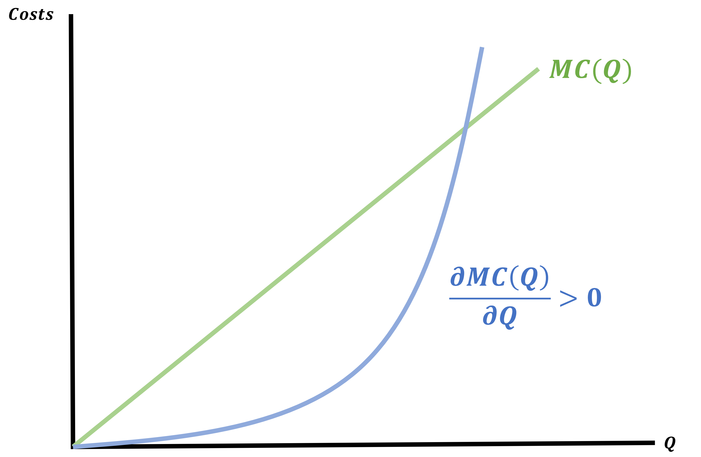
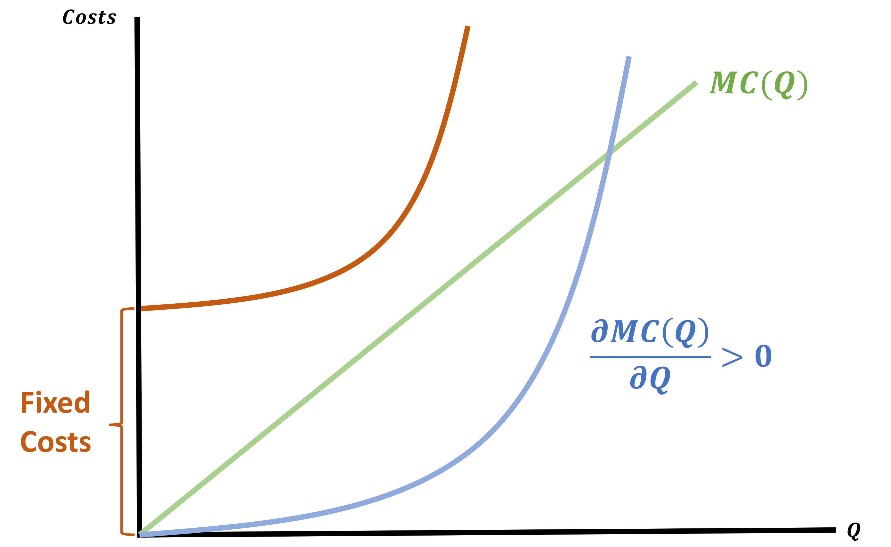
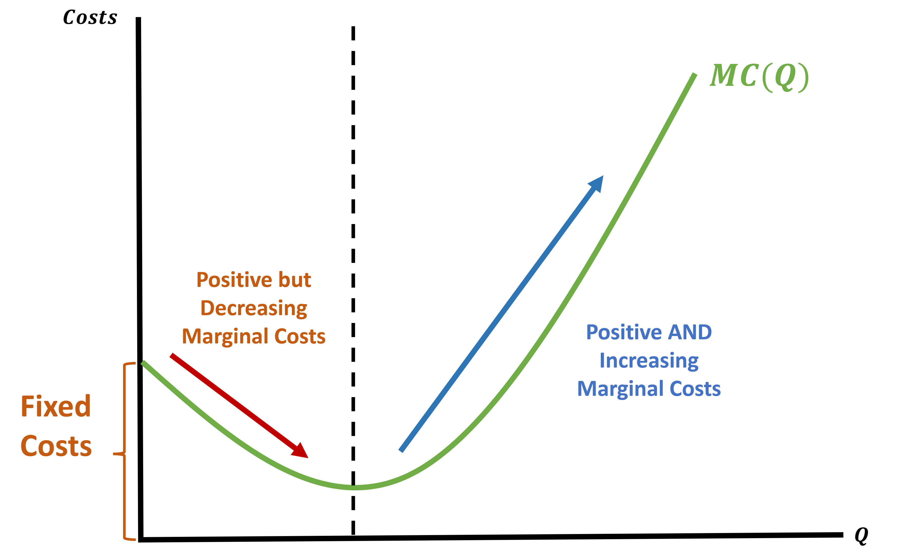
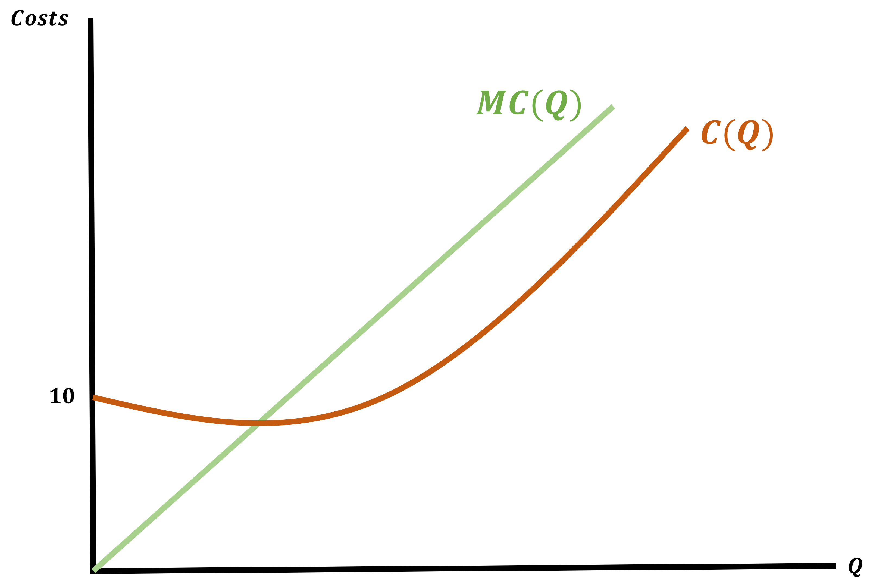
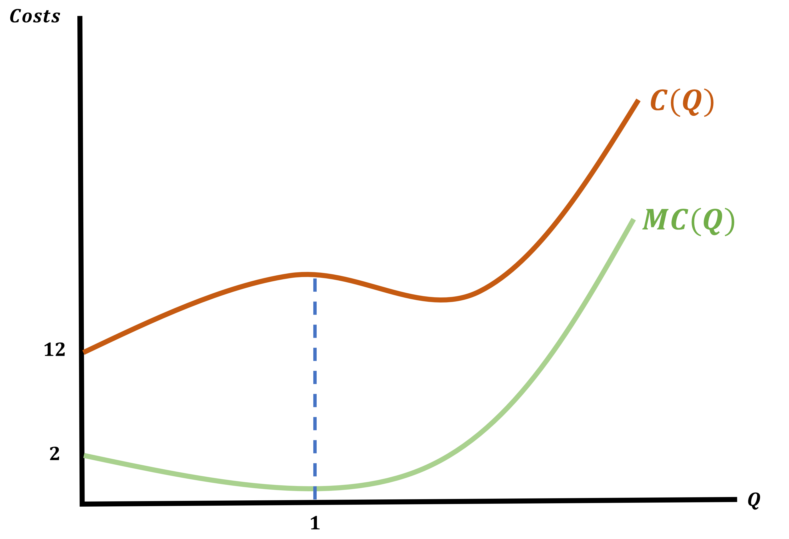
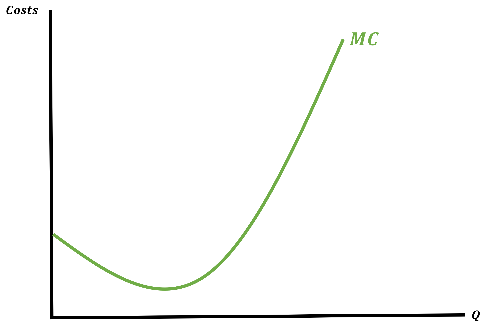
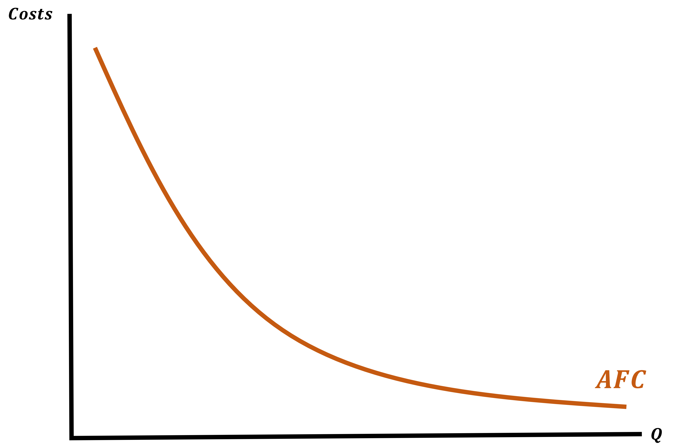
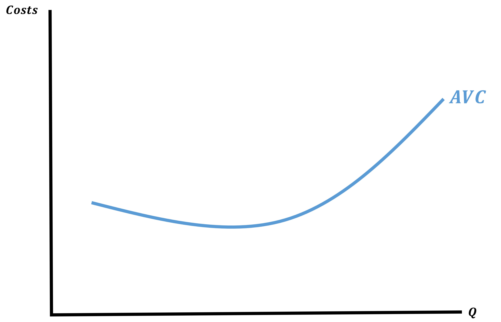
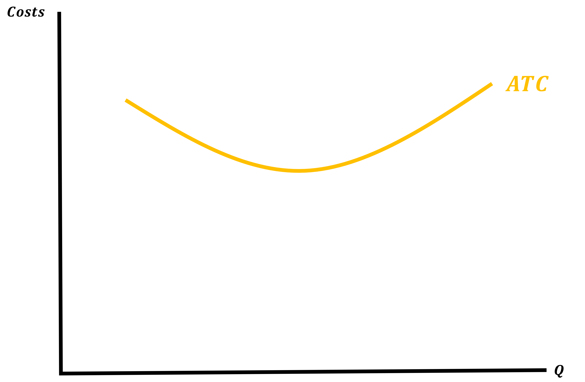
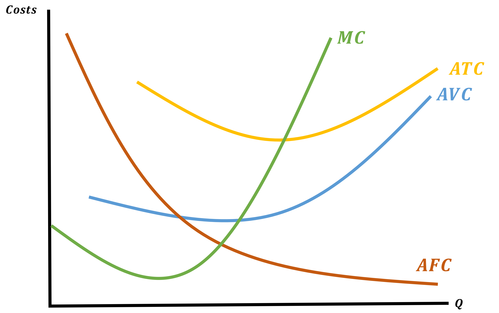

Cost Functions
EC 311 - Intermediate Microeconomics
2024
Outline
Chapter 07
Topics
Cost Curves (7.3)
Average and Marginal Costs (7.4)
Cost Curves
What The Hell Is A Cost Function?
Our goal for the second half of the class is to minimize costs.
We will do this by deriving a minimzed cost function but what even is it?
Let’s begin by introducing some useful notation:
- The minimized cost function will be \(C^{*}(Q)\)
- This function tells us that for any given quantity \((Q)\), \(C^{*}(Q)\) represents the cheapest way possible to produce \(Q\)
We will leverage this information:
Knowing \(C^{*}(Q)\) means that we do not have to solve the cost minimization problem to figure out how much it will cost you to produce a target quantity
Cost Functions
The general formula for a cost function is:
\[ C^{*}(Q) = wL^{*}(Q) + rK^{*}(Q) \]
To find this we will
- Find the MRST and set it equal to the price ratio
- Plug into our Q constraint and find a \(L^{*}\) and \(K^{*}\) in terms of \(Q\)
- Find the cost of the optimal \(L^{*}\) and \(K^{*}\)
Last lecture we found levels of \(L^{*}\) and \(K^{*}\) when we knew \(Q\). Now we will keep \(Q\) as a variable so we can find costs for any possible quantity.
Cost Function Example - Step 1
Let’s say we are faced with the following problem:
\[ \min 10L + 10K \;\;\;\; s.t. \;\;\;\; \bar{Q} = f(L,K) = L^{1/4}K^{1/4} \]
We begin by finding the MRTS and set it equal to the Price Ratio
MRTS
\[\begin{align*} \text{MRTS} &= \frac{MU_{L}}{MU_{K}} \\ &= \frac{1/4 \cdot L^{-3/4}K^{1/4}}{1/4 \cdot L^{1/4}K^{-3/4}} \\ &= \frac{K^{1/4}K^{3/4}}{L^{1/4}L^{3/4}} = \frac{K}{L} \\ \\ \end{align*}\]
Price Ratio
\[\begin{align*} \frac{w}{r} = \frac{10}{10} = 1 \end{align*}\]
Set Them Equal
\[\begin{align*} \frac{K}{L} = 1 \rightarrow K = L \end{align*}\]
Cost Function Example - Step 2
\[ K = L \;\;\;\; \text{recall:} \;\; \bar{Q} = f(L,K) = L^{1/4}K^{1/4} \]
We found our Optimality Condition for \(K\) and \(L\)
Plug into Q-Constraint to find \(\; L^{*}(Q) \;\) and \(\; K^{*}(Q) \;\)
Q-Constraint
\[\begin{align*} Q &= F(L,K) = L^{1/4}\color{red}{K^{1/4}} \\ Q &= L^{1/4}\color{red}{L^{1/4}} = L^{1/2} \\ Q &= L^{1/2} \\ \end{align*}\]
Solve for \(\; L^{*}(Q) \;\) and \(\; K^{*}(Q)\)
\[\begin{align*} L^{1/2} &= Q \\ (L^{1/2})^{\color{red}{2}} &= Q^{\color{red}{2}} \\ L^{*} &= Q^{2} \\ K^{*} &= Q^{2} \end{align*}\]
Cost Function Example - Step 3
\[ L^{*} = Q^{2} \;\;\; \& \;\;\; K^{*} = Q^{2} \;\;\;\; \text{recall:} \; C(Q) = 10L + 10K \]
We found our optimal Labor and Capital choices are in terms of \(Q\)
Find \(\; C^{*}(Q) \;\) using \(\; L^{*} \;\) and \(\; K^{*}\)
\[\begin{align*} C^{*}(Q) &= 10 \cdot \color{red}{L^{*}(Q)} + 10 \cdot \color{red}{K^{*}(Q)} \\ C^{*}(Q) &= 10 \cdot \color{red}{Q^{2}} + 10 \cdot \color{red}{Q^{2}} \\ C^{*}(Q) &= 20 \cdot Q^{2} \end{align*}\]
Why Bother With Cost Functions?
To begin, they are very useful in industry
Let’s think back to our Ducks jersey example. Nike wants you to make 20,000 jerseys. All you do is turn around and say it will cost
\[\begin{align*} C^{*}(Q) &= 20 \cdot Q^{2} \\ C^{*}(20,000) &= 20 \cdot 20,000^{2} \\ C^{*}(20,000) &= 20 \cdot 400,000,000 = 8,000,000,000 \end{align*}\]
But then with Bo Nix being gone, they only need 1,000 jerseys
So you say: That sucks, I thought we were better than just Bo, but okay. It’ll cost:
\[ C^{*}(1,000) = 20 \cdot 1,000^{2} = 20,000,000 \]
Why Bother With Cost Functions?
More generally, as the factory manager, you would just share your cost function with Nike and they can:
- Use it to figure out the optimal number of jerseys tor produce, taking costs of production into account
- We will introduce profits later
- This decision is where Supply will come from
But before we can get into Profit Maximization, we will dive deeper into understanding cost functions
What Goes Into Cost Functions?
Beyond wages and rental rates, economists think about costs in a different way:
We consider ALL foregone alternatives that we could have used our resources in
We call this opportunity cost:
- It is the value of inputs when used for their best alternative use
Opportunity Cost
Let’s consider of a non-economics example Kyler Murray
NFL Quarterback for the AZ Cardinals
He has a 5yr/ $230,500,000 contract
But he also played baseball in college and nearly went pro
Understanding Cost Functions
Knowing what is considered as costs in economics helps us with the theory part of production
- It will play a larger role when we deal with profit maximization
For now, we can figure out how we expect cost functions to behave:
Assume a generic cost function such that \(C = F(Q)\)
When \(Q\) increases what do we expect to happen to \(C\)?
- They should INCREASE
It usually costs more to make more goods
This means that the first derivative \((C'(Q))\) should be?
- Positive \(\; \rightarrow C'(Q) > 0\)
Derivative of \(C(Q)\)
The derivative of \(C(Q)\) is very important
So much so that we give it a name: Marginal Cost (MC)

Marginal Costs
We will add an additional assumption to make our lives easier
Assume that firms production functions exhibit decreasing returns
- This has a direct implication on our Marginal Cost curve
- \(MC(Q)\) will increase as \(Q\) increases
- It becomes more expensive to make an additional unit as you make more and more
- So Decreasing Returns to Scale (DRS) = Increasing Marginal Costs
Marginal Cost Curves
Cost of Producing Nothing?
Does it actually cost nothing to make nothing?
We will assume that there exists some form of overhead or fixed costs associated with producing goods
- A business pays rent on their warehouse no matter how empty or full it is
- A restaurant has to purchase a license in order to serve food/alcohol

How Realistic are Cost Functions?
A good thinker is initially skeptical. So let’s cast some doubt on our Increasing Marginal Cost assumption
Isn’t producing in bulk sometimes much easier than producing small quantities?
- The existence of Costco tells us yes
So this is true, but only up to a point
- We are perfectly comforable modeling firms that initially experience decreasing marginal costs but at a high-enough quantity produced, they must experience increasing marginal costs
Initial Decreasing Marginal Costs with Increasing Marginal Costs At High Quantity
Types of Cost Functions - Quadratic
We will be dealing with two types of cost functions: Quadratic and Cubic:
Quadratic
MC is always increasing
\[\begin{align*} C(Q) &= Q^{2} + 10 \\ \frac{\partial C(Q)}{\partial Q} &= MC = 2Q \\ \end{align*}\]
\[\begin{align*} \frac{\partial MC}{\partial Q} &= 2 > 0 \end{align*}\]
How Does the Graph Look?

Types of Cost Functions - Cubic
Cubic
MC is initially decreasing, and eventually increasing
\[\begin{align*} C(Q) &= \frac{1}{3}Q^{3} - Q^{2} + 2Q + 12 \\ \frac{\partial C(Q)}{\partial Q} &= MC = Q^{2} - 2Q + 2 \end{align*}\]
\[\begin{align*} \frac{\partial MC}{\partial Q} &= 2Q - 2 \end{align*}\]
\[\begin{align*} 2Q - 2 &= 0 \\ 2Q &= 2 \\ Q &= 1 \end{align*}\]
When does it switch from (-) to (+)?
\[\begin{align*} Q &< 1 \rightarrow \text{Decreasing} \\ Q &> 1 \rightarrow \text{Increasing} \end{align*}\]

Total Cost
Up to now we have expressed firm’s costs as
\[ TC(Q) = w \cdot L^{*}(Q) + r \cdot K^{*}(Q) \]
Which let’s us know the cheapest way to produce a given target \(Q\)
We can also express costs as a function of quantity
\[ TC(Q) = f(Q) + F \]
Where \(F\) is a non-negative constant
We will split these costs up by type (i.e. More Cost Functions!)
Decomposing Costs
Costs will fall into one of two categories:
Fixed Costs
Costs that are paid even if the firm produces nothing \(\rightarrow C(0)\)
Variable Costs
Costs that are increasing in the quantity produced (e.g. materials and labor used to produce each unit)
In its simplest form, total cost can be written as
\[ \text{Total Cost} = \text{Variable Costs} + \text{Fixed Costs} \]
Fixed Costs (FC)
These are costs the firm has to pay even if it produces 0 units of output
- Also known as the intercept of the Cost Function
\[ FC = TC(0) = f(0) + F = F \]
We can find these by setting \(Q = 0\)
Find the Fixed Costs for the following Cost Function
\[ C(Q) = Q^{2} + 10 \]
\[ C(0) = 0^{2} + 10 = 10 \]
Variable Costs (VC)
These are the increasing costs that the firm pays for every unit of quantity produced
- These are costs of producing \(Q\), when we ignore all Fixed Costs
\[\begin{align*} TC(Q) &= VC + FC \\ VC &= TC(Q) - FC \end{align*}\]
Find the Variable Costs for the following Cost Function
\[ C(Q) = Q^{2} + 10 \]
\[ VC = Q^{2} \]
Decomposing Costs
It is always the case that
\[ C(Q) = VC(Q) + FC \]
Costs will always be the sum of the variable costs and the fixed cost
Let’s practice:
Decompose the following Cost Function into FC, VC, and MC
\[ C(Q) = \frac{1}{3} Q^{3} - Q^{2} + 2Q - 12 \]
\[\begin{align*} FC &= 12 \\ VC &= \frac{1}{3} Q^{3} - Q^{2} + 2Q \\ MC &= Q^{2} - 2Q + 2 \end{align*}\]
Average & Marginal Costs
Decomposing Costs: Average Costs
Although Total, Variable, and Fixed Costs are important to Cost Functions we do not really care for them on their own
What we care about are the Average of these costs
Now we will introduce Average Costs which are quite literally just the average of the previous costs
Average Total Costs
\[ ATC(Q) = \frac{C(Q)}{Q} \]
Average Fixed Costs
\[ AFC(Q) = \frac{FC}{Q} \]
Average Variable Costs
\[ AVC(Q) = \frac{VC(Q)}{Q} \]
Decomposing Costs: Average Costs
For the following Cost Function
\[ C(Q) = Q^{2} + 10 \]
\[\begin{align*} ATC = Q + \frac{10}{Q} \;\;\;\;\;\;\;\;\;\; AFC = \frac{10}{Q} \;\;\;\;\;\;\;\;\;\; AVC = Q \end{align*}\]
Graphing Cost Functions
Graphing cost functions is very helpful to understanding what is going on and how optimal choices are made
For the Cost Function
\[ C(Q) = \frac{1}{3}Q^{3} - Q^{2} + 2Q + 12 \]
We will graph the MC, AFC, AVC, and ATC
But first we will derive them
Finding and Graphing Marginal Costs
\[ C(Q) = \frac{1}{3}Q^{3} - Q^{2} + 2Q + 12 \]
The Marginal Cost
\[\begin{align*} MC &= \frac{\partial C(Q)}{\partial Q} = Q^{2} - 2Q + 2 \end{align*}\]
Graphing MC

Finding and Graphing Average Fixed Costs
\[ C(Q) = \frac{1}{3}Q^{3} - Q^{2} + 2Q + \color{red}{12} \]
The Average Fixed Cost
\[\begin{align*} AFC &= \frac{FC}{\partial Q} = \frac{12}{Q} \end{align*}\]
Graphing AFC

Finding and Graphing Average Variable Costs
\[ C(Q) = \color{red}{\frac{1}{3}Q^{3} - Q^{2} + 2Q} + 12 \]
The Average Variable Cost
\[\begin{align*} AVC &= \frac{VC}{\partial Q} = \frac{1}{3}Q^{2} - Q + 2 \end{align*}\]
Graphing AVC

Finding and Graphing Average Total Costs
\[ C(Q) = \color{red}{\frac{1}{3}Q^{3} - Q^{2} + 2Q + 12} \]
The Average Total Cost
\[\begin{align*} ATC &= \frac{C(Q)}{Q} = \frac{1}{3}Q^{2} - Q + 2 \end{align*}\]
Graphing ATC

Graphings Costs: All Together
Key Things About Graphing Costs
As always, the scale is not very important
But be sure to get the most important facts down:
- They are all convex (open upwards)
- AVC is always below the ATC
- Where the curves cross is crucial
- The MC crosses the AVC and ATC at their minimum values
- As always, label your curves and axis!
Importance of Average Total & Marginal Cost Relationship

What is so special about the point where MC and ATC cross?
- It is where the ATC is at it’s minimum value
- Mathematically, this is where the derivative of ATC \(= 0\)
- This implies that the MC = ATC
Let’s look at an example that will show us what I mean intuitively
Average Total & Marginal Cost Relationship
Imagine we measure the height of everyone in class and find the average height
Then someone new joins the class
What happens to the average height if the new person is shorter than the average?
It decreases
When the Marginal Person is shorter than the average, the average decreases
When the Marginal Person is taller than the average, the average increases
Average Total & Marginal Cost Relationship
At our sweet spot where MC = ATC at the minimum of the ATC we can say:
- When the Marginal Cost is less than the Average Total Cost, the ATC must be decreasing
- When the Marginal Cost is larger than the Average Total Cost, the ATC must be increasing
Therefore, when MC = ATC, the average total cost is switching from decreasing to increasing
- That is the definition of a minimum
All of this will be useful for our next topic: Profit Maximization
EC311 - Lecture 06 | Cost Functions